Salesforce SBR Solution.
A unified renewal workflow that brought together fragmented systems, customer context and proactive next steps for sales teams.
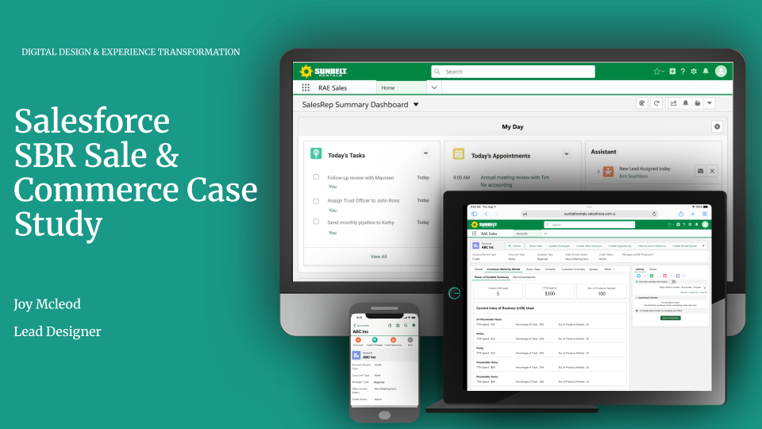
Renewal was spread across too many places.
I led the redesign of the Salesforce workflow to address the friction created by fragmented systems, manual data entry and limited pipeline visibility. Sales teams needed one reliable place to understand the customer, move a renewal forward and know what to do next.
Responsibilities
- UX design lead, research & strategy
- Wireframing & prototyping
- Usability testing
- Design system implementation

I mapped the renewal journey before designing the workflow.
I interviewed sales reps, regional managers and operations partners, then mapped the end-to-end renewal journey and created personas. The research surfaced redundant entry, unclear pipeline visibility and a lack of proactive alerts for expiring contracts.
The strategy and research phases established a shared, user-centered foundation for the work—before moving into design, testing and iteration.
UX process & methodology
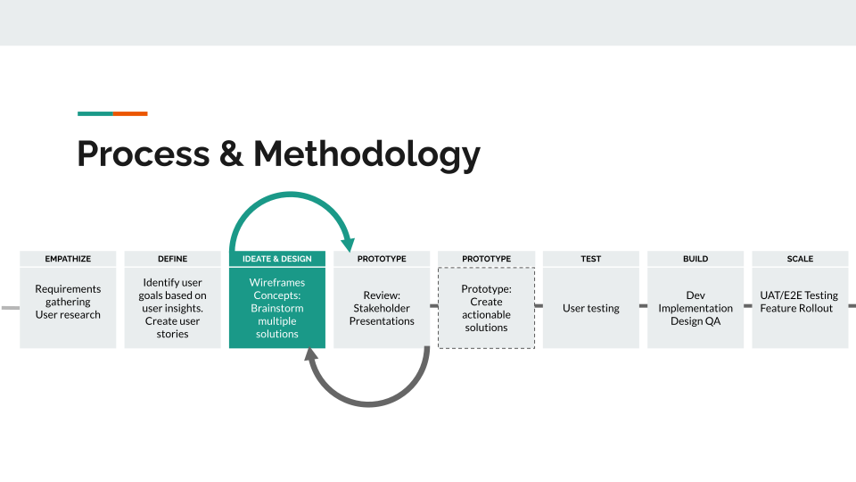
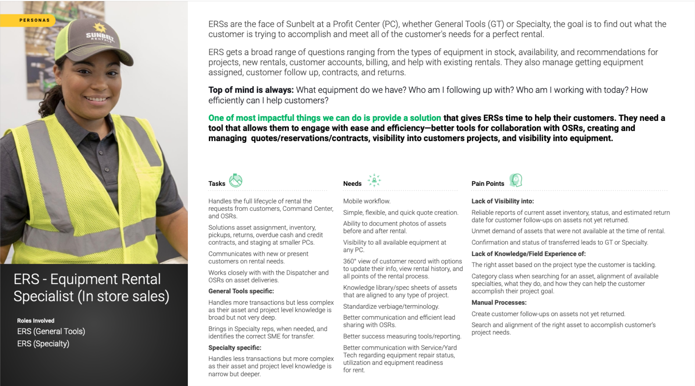
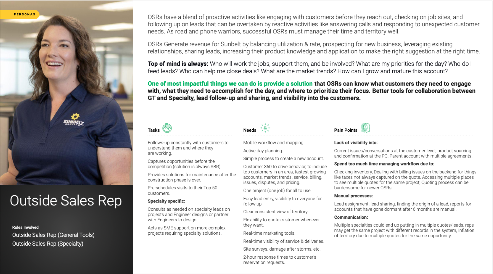
Made the customer story easier to scan and act on.
Card-sorting sessions and user flows helped reveal how users naturally grouped and prioritized information. That input shaped an intuitive information architecture and flow for a 360° customer view, including history, product usage and recommended upsell or cross-sell opportunities.
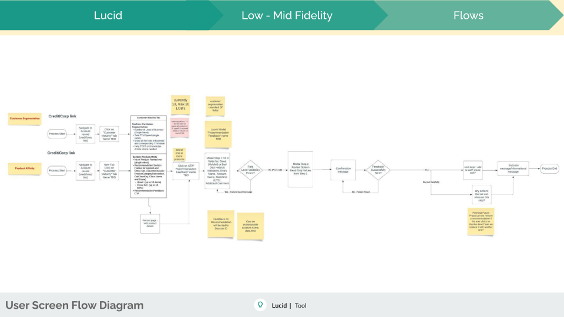
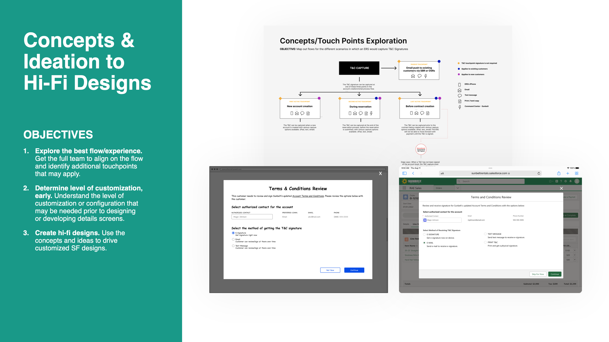
Prototyped the whole workflow, and refine it with users.
Low- to medium-fidelity wireframes made it possible to test the core workflow early. High-fidelity prototypes then brought the experience closer to the finished product, with polished screens, realistic interactions and clear documentation for engineering.
- Built interactive flows to simulate real sales workflows.
- Tested navigation, ease of use and task completion with stakeholders and end users.
- Used working prototypes to align executives, product and engineering.
- Prepared specifications, component documentation and style guidance for handoff.
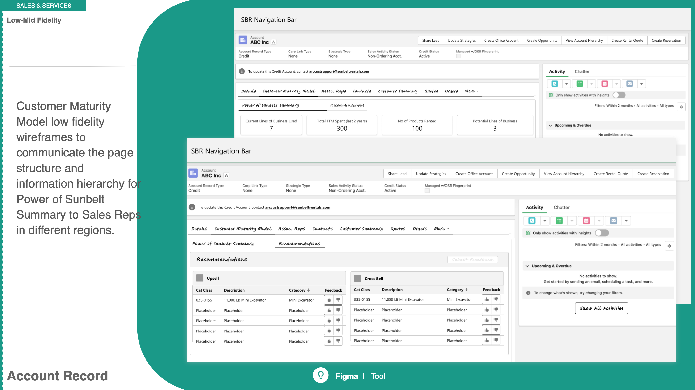
Detailed low-fidelity exploration
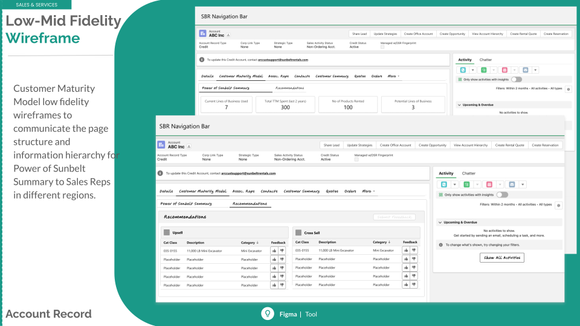
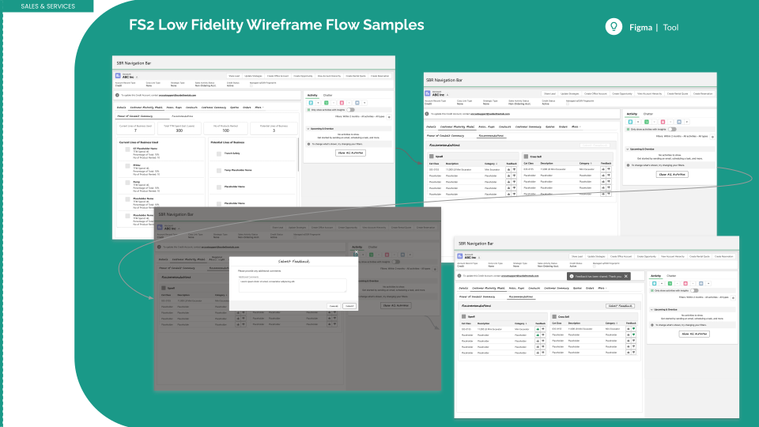
High-fidelity prototype details


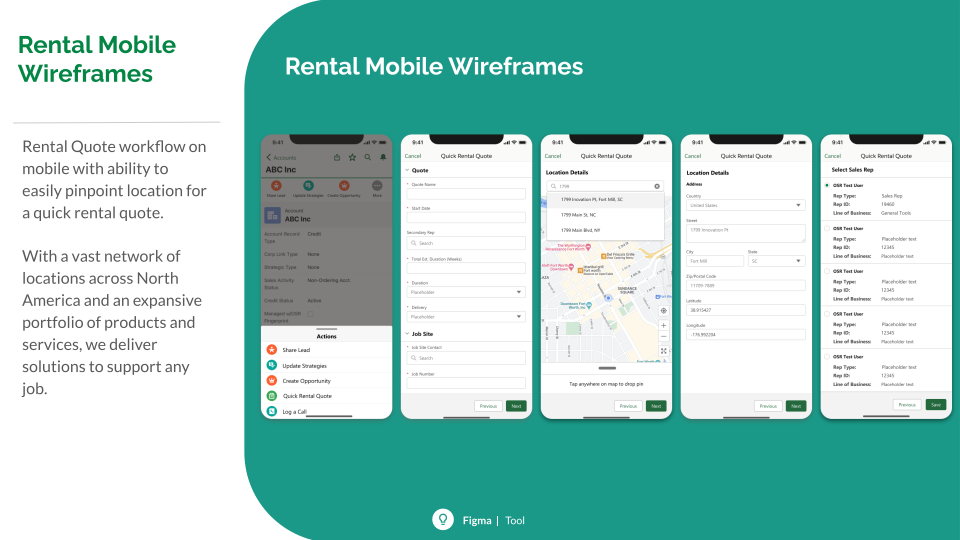
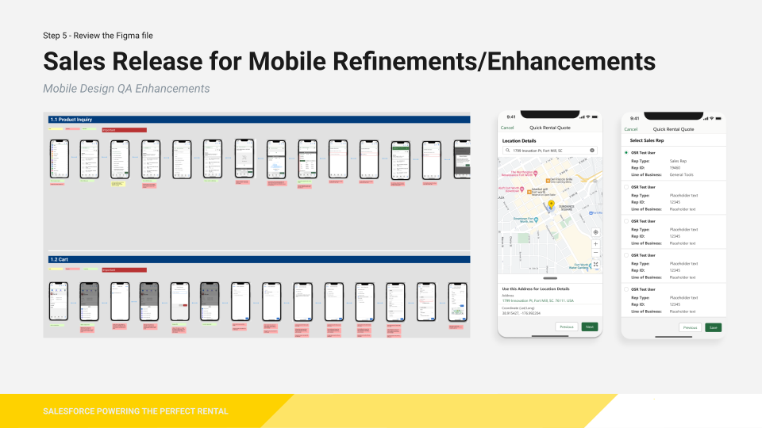
Renewal completion time was reduced through a more connected workflow.
Unified pipeline information improved forecasting accuracy.
Salesforce became the central place for sales reps to manage renewal work.